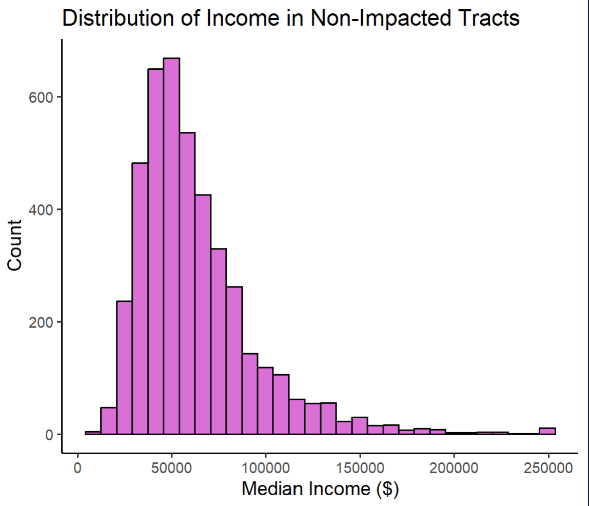

The state of Texas experienced significant power loss following three severe winter storms in February 2021, affecting many families and communities in the state. More background on this can be found on Wikipedia.
I will be estimating the number of homes in Houston that lost power due to these storms, and investigating if socioeconomic factors were predictors of community recovery from a power outage. To do so, I will be working with raster and vector data, and joining spatial data.
I will be using data from February 7, 2021 and February 16, 2021. After exploring data on NASA Worldview, these two dates have a low amount of cloud cover compared to surrounding dates, giving two clear, but contrasting imaged to understand the areas that experienced a power outage in Texas.
Roads
I used Geofabrik’s download sites to retrieve a shapefile of all highways in Texas and prepared a Geopackage (.gpkg file) containing just the subset of roads that intersect the Houston metropolitan area This is a third party company that redistributes OSM Data, as ingesting this data into a database where it can be subsetted and processed is a large undertaking. OpenStreetMap (OSM) is a collaborative project which creates publicly available geographic data of the world and is where the original data is gathered.
Typically highways account for a large portion of the night lights observable from space (see Google’s Earth at Night). To minimize falsely identifying areas with reduced traffic as areas without power, I will be ignoring areas close to highways.
Houses
OpenStreetMap also has building data. I again downloaded from Geofabrick and prepared a file containing only houses in the Houston metropolitan area.
Socioeconomic
Since I can’t readily access all socioeconomic information for every home in the Houston area, I obtained data from the U.S. Census Bureau’s American Community Survey for census tracts in 2019.
Spatial Analysis
1. Finding locations of blackouts
Combining the data
Here, I will start with loading in the appropriate packages and reading in the night light tiles I downloaded. Then, I will combine the tiles into a single object for each date (one before the storm, one after the storm).
Show code
library(sf) #Support for simple featureslibrary(stars) #Manipulating spatiotemporal arrays library(dplyr) #Data manipulationlibrary(tmap) #map makinglibrary(ggplot2) #plot makinglibrary(here) #path constructionlibrary(terra) #spatial analysis of vector data#read in night light tilesnightlights_pic1 <-read_stars(here("posts/2023-09-06-houston_spatial_analysis/data/VNP46A1/VNP46A1.A2021038.h08v05.001.2021039064328.tif"))nightlights_pic2 <-read_stars(here("posts/2023-09-06-houston_spatial_analysis/data/VNP46A1/VNP46A1.A2021038.h08v06.001.2021039064329.tif"))nightlights_pic3 <-read_stars(here("posts/2023-09-06-houston_spatial_analysis/data/VNP46A1/VNP46A1.A2021047.h08v05.001.2021048091106.tif"))nightlights_pic4 <-read_stars(here("posts/2023-09-06-houston_spatial_analysis/data/VNP46A1/VNP46A1.A2021047.h08v06.001.2021048091105.tif"))
Show code
#combine into one stars object for each day#2021-02-07night_tiles_2021_02_07 <-st_mosaic(nightlights_pic1, nightlights_pic2)#2021-02-16night_tiles_2021_02_16 <-st_mosaic(nightlights_pic3, nightlights_pic4)
Creating a blackout mask
Masking is a subsetting technique for spatial data. Creating a mask identifies cells with information I want to know, make that its own layer, and then can be applied to the other raster layer.
I am finding the difference in intensity of night lights between the two dates I have spatial data for. I am making an assumption that the difference is caused by the storm. I have to reclassify the difference raster to create the mask, so I make an assumption that anywhere that had a difference of 200 nW cm-2sr-1 (unit of radiance) or more experienced a blackout. Then, I will assign NA all locations that experienced a difference of less than this threshold, since the difference is not great enough to indicate a power outage.
Show code
#find the change in night lights intensity caused by storm by subtracting the Feb 7 raster from Feb 16 rasterintensity_diff <- night_tiles_2021_02_16 - night_tiles_2021_02_07plot(intensity_diff,main ="Change in night lights intensity due to storm")
Figure 1. First step in creating blackout mask is to find the difference in intensity of lights from before and after the storm.
Show code
#start by reclassifying intensity diff raster to recognize >200 as a blackoutmask <-cut(intensity_diff, c(200, Inf), labels =c("Blackout"))#reassign raster to assign NA to all locations of less than 200 nmask[mask <200] =NA#blackout mask with <200 = NA and >200 = blackoutplot(mask, breaks ="equal", col ="black")
Figure 2. Blackout mask, where <200 nW cm-2sr-1 = NA and >200 nW cm-2sr-1 = blackout
Vectorize the mask
Now, I will use st_as_sf() from the sf package to vectorize the blackout mask so I can continue working with the mask I made, ultimately being able to overlay it with other data and determine where the blackouts occurred. I also will use st_make_valid from the same package to fix any invalid geometries.
Show code
vector_mask <-st_as_sf(mask) |>#vectorize sf maskst_make_valid() #fix invalid geomsplot(vector_mask)
Figure 3. Vectorized blackout mask
Cropping the vectorized map to our region of interest
I am interest in the Houston Metropolitan area, and will be defining this area by the following coordinates:
Now that I have the coordinates of interest, I will turn them into a polygon using st_polygon function from the sf package. A polygon is a set of discrete spatial points, composed of vertices of many spatial coordinates.
Then, I will convert the polygon into a simple feature collection using st_sfc() and assign a coordinate reference system (CRS). I am assigning a CRS since the polygon’s CRS must match that of the night lights data I downloaded if I want to join them. So, I will reproject the cropped blackout data to EPSG:3083 (NAD83 / Texas Centric Albers Equal Area).
Then, I will spatially subset/crop the blackout mask I created to the Houston region I defined as a polygon.
Show code
# define coords ne <-c(-94.5, 30.5) se <-c(-94.5, 29) sw <-c(-96.5, 29)nw <-c(-96.5, 30.5) # st_polygon input (since we can't just put these points in by themselves, input has to be a list) and we will make polygon of Houston using st_polygonshouston_boundary <-list(rbind(sw, nw, ne, se, sw))# polygon to represent Houstonhouston_points <-st_polygon(x = houston_boundary, if (length(x)) "XYZ"else"XY")# Convert houston to a simple feature collection to feed in into st_crophouston_sf <-st_sfc(houston_points, crs =4326)# Crop the blackout mask to houston areablackout_cropped <-st_crop(vector_mask, houston_sf)# Reproject cropped blackout mask onto crs of interest (3083)reproj_houst_blackout <-st_transform(blackout_cropped, crs =3083)plot(reproj_houst_blackout)
Figure 4. Cropped blackout mask overlaid in Houston region
Excluding highways from blackout mask
The data I downloaded for the roads includes data on roads other than highways. So, to avoid reading in data I won’t be using, I will take advantage of the st_read function’s ability to subset using a SQL query.
To do so, I will start by defining a SQL query and load only the highway data using this query and st_read. I then have to reproject this data to the same CRS I used earlier (EPSG:3038).
To identify areas that are within 200 meters of all highways, I will use st_buffer that will compute a polygon that represents all points this range. This will allow me to find the areas that experienced blackouts that are further than 200 meters from a highway (to eliminate the lights produced by street lamps and other lights along highways that are detected).
Show code
#define a SQL queryquery <-"SELECT * FROM gis_osm_roads_free_1 WHERE fclass='motorway'"#load highway data from geopackage THIS PART NEEDS TO BE FIXED!!!!!!!!!!highways <-st_read("C:/Users/kiran/Documents/MEDS 2022-2023/kiranfavre.github.io/posts/2023-09-06-houston_spatial_analysis/data/gis_osm_roads_free_1.gpkg", query = query)#reproject to EPSG 3083reproj_highways <-st_transform(highways, crs =3083)#identify areas within 200m of all highwayshighway_buffers <-st_buffer(reproj_highways, dist =200) |>st_union()#identify areas that are further away than 200, from a highway that had a blackoutoutside_hwy_buffers <-st_disjoint(x = highway_buffers, y = reproj_houst_blackout)
2. Finding homes impacted by blackouts
Loading buildings data
To find homes impacted by blackouts, I will start by loading in the building dataset and use another SQL query to only select residential buildings. As I did with the earlier data, I will also reproject this data to the same CRS.
Show code
#make sql query for building databldg_query <-"SELECT * FROM gis_osm_buildings_a_free_1 WHERE type IS NULL AND name IS NULL OR type in ('residential', 'apartments', 'house', 'static_caravan', 'detached')"#load in building databuildings <-st_read("C:/Users/kiran/Documents/MEDS 2022-2023/kiranfavre.github.io/posts/2023-09-06-houston_spatial_analysis/data/gis_osm_buildings_a_free_1.gpkg", query = bldg_query)#reproject building data ro crs EPSG:3083reproj_buildings <-st_transform(buildings, crs =3083)
Finding homes in blackout areas
Now, I will filter the data to homes within the blackout area by using the blackout mask I created and overlay that onto the data on Houston residential buildings, and count the number of impacted homes.
Show code
#use blackout mask, overlay onto houston homesblackout_homes <-st_join(reproj_houst_blackout, reproj_buildings)#filter houston with blackout masknumber_blackout_homes <- blackout_homes |>filter(fclass =="building") |>#filtering for homessummarize(count_blackout_homes =n()) #give number of homes that were impacted by blackout#number of homes in blackout areaprint(paste0("There were " ,number_blackout_homes$count_blackout_homes, " homes in Houston that were impacted by the blackout","."))
3. Investigating socioeconomic factors
Loading Census data
I will again use st_read() to load the data, and separate the layers from the geodatabase into geometries and income data. I will select the median income field from this layer, and also reproject this data.
Show code
#ACS geodatabase geomoetriestexas_geoms <-st_read(dsn ="C:/Users/kiran/Documents/MEDS 2022-2023/kiranfavre.github.io/posts/2023-09-06-houston_spatial_analysis/data/ACS_2019_5YR_TRACT_48_TEXAS.gdb",layer ="ACS_2019_5YR_TRACT_48_TEXAS")#read in income layer from geometriesincome_data <-st_read(dsn ="C:/Users/kiran/Documents/MEDS 2022-2023/kiranfavre.github.io/posts/2023-09-06-houston_spatial_analysis/data/ACS_2019_5YR_TRACT_48_TEXAS.gdb",layer ="X19_INCOME")#select median income field from income layermedian_income <- income_data |>select('GEOID','B19013e1') #reproj texas geommsreproj_tx_geoms <-st_transform(texas_geoms, crs =3083)
Determining which census tracts experienced blackouts
Now, I will join the income data to the census tract geometries by geometry ID, and spatially join census tract data with buildings determined to be impacted by blackouts to find which census tracts had blackouts.
Show code
#want to join all of both data sets by GEOMID, so using a left joinjoined_income_census <-left_join(reproj_tx_geoms, median_income, by =c("GEOID_Data"="GEOID")) #spatially join tx census data with buildings impacted by blackoutsblackout_bldgs_census <-st_join(blackout_homes,joined_income_census)#determine which census tracts were impacted by the blackoutblackout_tracts <- blackout_bldgs_census |>group_by(TRACTCE) |>summarize(B19013e1 =n()) #just has tract id, median income, and associated geometries
Comparison of incomes of impacted tracts to unimpacted tracts
Show code
#median income by tract, joined_median_income_census <- joined_income_census |>group_by(TRACTCE, B19013e1)|>summarize()#just has tract id, median income, and associated geometries#map of median income homes by census tract that experienced blackoutstm_shape(houston_sf) +tm_polygons(col ="white") +tm_shape(joined_median_income_census) +tm_polygons(col ="white") +tm_shape(blackout_tracts) +tm_polygons(col ="blue") +tm_layout(main.title ="Median Income Homes in Houston Impacted by Blackouts", title.size =0.1) ##FIX THIS!
Figure 5. Map of median income by census tract
Show code
#distribution of income in immpacted tracts - histogram w ggplot#make histogram impacted_hist <-ggplot(joined_median_income_census) +geom_histogram(aes(x = B19013e1),color ="black",fill ="seagreen3") +labs(x ="Median Income ($)",y ="Count",title ="Distribution of income in impacted tracts") +theme_classic()impacted_hist
Figure 6. Distribution of income in impacted tracts
Show code
#need to take out geom for both median income census data and blackout datato find tracts not affectedjoined_income_census_nogeom <- joined_median_income_census |>st_drop_geometry()blackout_tracts_nogeom <- blackout_tracts |>st_drop_geometry()##not joined_income_census#need to find tracts that were not impacted by blackoutnon_impacted_tracts <-anti_join(x = joined_income_census_nogeom, y = blackout_tracts_nogeom, by ="TRACTCE")#make hist of distnon_impacted_hist <-ggplot(non_impacted_tracts) +geom_histogram(aes(x = B19013e1),color ="black",fill ="orchid") +labs(x ="Median Income ($)",y ="Count",title ="Distribution of income in non-impacted tracts") +theme_classic()non_impacted_hist

Figure 7. Distribution of income in non-impacted tracts
Show code
library(gridExtra)#plot both side by side to compareboth_hists <-grid.arrange(impacted_hist,non_impacted_hist)both_hists
Figure 8. Comparison of distribution of income fpr impacted versus non-impacted tracts
This study showed that there were more houses with a lower median income impacted by the blackout than those not impacted by the blackout. However, the distribution of income in impacted areas and non impacted areas are very similar (both being skewed to the right). Limitations of this study could include non-response bias with the Census data or could have used differing sizes for the highway buffers. People could have not responded to Census data collection, or families could have impacted the intensity of light coming from their home depending if they were there or not the days the images were collected.
Citation
BibTeX citation:
@online{favre2023,
author = {Favre, Kiran},
title = {Spatial {Analysis} of {Houston} {Power} {Outages}},
date = {2023-09-14},
url = {https://kiranfavre.github.io/posts/houston_spatial_analysis/},
langid = {en}
}